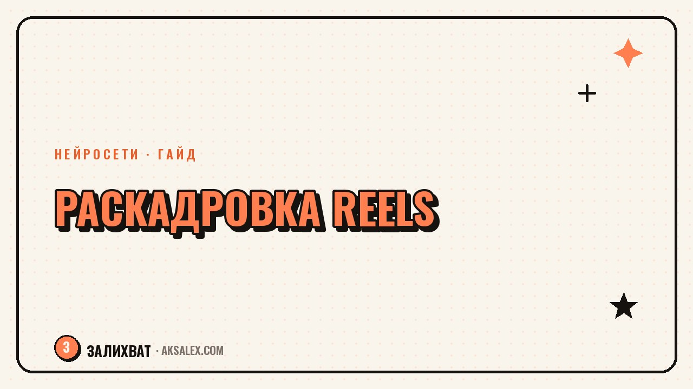

Раскадровка Reels с нейросетью: гайд для блогера

Ты садишься снимать Reels без плана, а через полчаса понимаешь, что отсняла десять дублей одного и того же кадра, а нужной мысли так и не сказала. Раскадровка решает эту проблему: это короткий список кадров с текстом и длительностью, который ты составляешь до включения камеры. Раньше на неё уходило время, теперь черновик можно собрать с нейросетью за 15-20 минут, а тебе останется только доработать детали под свой голос.
Зачем блогеру раскадровка, если это не кино
Раскадровка ассоциируется со съёмочной площадкой и режиссёрским креслом, но для Reels это обычный рабочий список. В нём фиксируется, что происходит в каждом кадре, что ты говоришь и сколько секунд это займёт. Без такого списка съёмка превращается в импровизацию: ты говоришь одно и то же по кругу, теряешь мысль, а потом полчаса ищешь нужный дубль в галерее.
С готовой раскадровкой ты садишься перед камерой один раз, проговариваешь текст по пунктам и переходишь к следующему кадру. Съёмка ролика на 30 секунд занимает пять-семь минут вместо часа, а монтаж собирается почти сам, потому что кадры уже идут в правильном порядке.
Как нейросеть помогает собрать раскадровку за 15 минут
Нейросеть не придумывает за тебя смысл ролика, но берёт на себя рутину: раскладывает готовую идею на кадры, считает примерную длительность и предлагает формулировки реплик. Тебе остаётся описать тему и главную мысль, а дальше редактировать черновик под свой стиль речи.
Что дать нейросети на вход
- Тему ролика одной фразой и целевую длительность в секундах
- Главную мысль, которую зритель должен запомнить
- Хук - первую фразу или действие, которое зацепит в первые секунды
- Формат: говорящая голова, кадры с руками, скринкаст или их сочетание
- Призыв в конце: подписка, комментарий, переход в профиль
Из этого нейросеть собирает черновой список кадров с примерным текстом на каждый. Дальше ты убираешь канцелярские фразы, добавляешь свои словечки и проверяешь, что реплики звучат так, как ты обычно говоришь, а не как рекламный буклет.
Структура раскадровки: кадр, план, текст, длительность
Удобнее всего вести раскадровку в виде таблицы на четыре колонки. Она умещается на одном экране телефона, и во время съёмки достаточно скользить взглядом по строкам.
| Кадр | Что в кадре | Текст | Секунды |
|---|---|---|---|
| 1 | Крупный план лица, эмоция удивления | Ты тоже теряешь час на раскадровку? | 3 |
| 2 | Экран телефона, заметки в приложении | Вот как я собираю план съёмки за 15 минут | 4 |
| 3 | Руки печатают запрос нейросети | Описываю тему и получаю черновик кадров | 6 |
| 4 | Снова лицо, спокойный тон | Дальше правлю текст под свой голос | 5 |
| 5 | Финальный кадр с призывом | Сохрани, чтобы не искать раскадровку заново | 3 |
Ошибки при раскадровке, из-за которых ролик разваливается
- Слишком длинные реплики в одном кадре: зритель не успевает считать смысл
- Кадры без чёткой цели, которые повторяют предыдущий по смыслу
- Хук придуман в последнюю очередь, хотя от него зависит удержание
- Нет паузы для перехода между мыслями, из-за чего монтаж выглядит рваным
- Реплики скопированы из черновика нейросети без адаптации под свою речь
Раскадровка нужна не для того, чтобы ролик выглядел постановочным, а для того, чтобы у тебя было право на один честный дубль.
Как адаптировать раскадровку под разные площадки
Один и тот же сценарий редко ложится на разные платформы без изменений. В Reels и Shorts зритель прощает резкие склейки и быстрый темп, а в более длинных форматах нужен плавный переход между мыслями и чуть больше пауз для дыхания.
Попроси нейросеть сократить готовую раскадровку до трёх ключевых кадров для вертикального короткого видео и отдельно расширить её до полной версии с подводкой, если планируешь публиковать этот же сюжет как более длинный ролик. Так один сценарий превращается в несколько форматов без повторного планирования с нуля.
Чек-лист перед съёмкой
- Хук записан первой строкой и цепляет за 1-2 секунды
- У каждого кадра есть одна мысль, а не три сразу
- Общая длительность совпадает с целевой для площадки
- Реплики звучат как твоя обычная речь, а не как читка по бумажке
- Есть понятный финальный кадр с призывом к действию
Частые вопросы
Сколько времени занимает раскадровка с нейросетью на практике?
На первый черновик уходит 10-15 минут: описать тему, получить список кадров и подправить формулировки. После нескольких роликов процесс ускоряется, потому что появляются готовые заготовки для типовых сюжетов.
Нужно ли строго следовать раскадровке во время съёмки?
Нет, это план, а не сценарий под запись слово в слово. Раскадровка держит структуру и не даёт забыть кадр, а формулировки во время съёмки можно менять на ходу, если так звучит естественнее.
Какую нейросеть использовать для раскадровки?
Подойдёт любая текстовая нейросеть с чатом: важно не название модели, а то, насколько подробно ты опишешь тему, хук и формат ролика во входном запросе.
Раскадровка нужна для каждого ролика или только для сложных?
Для простых роликов с одной мыслью хватит списка из трёх кадров на бумаге. Полноценная таблица пригодится для роликов с несколькими сценами, сменой локаций или сложным сюжетом.
Как понять, что раскадровка получилась удачной?
Если после съёмки монтаж собирается быстро и без лишних дублей, а зритель досматривает ролик до финального кадра с призывом, раскадровка сработала.
а не вручную